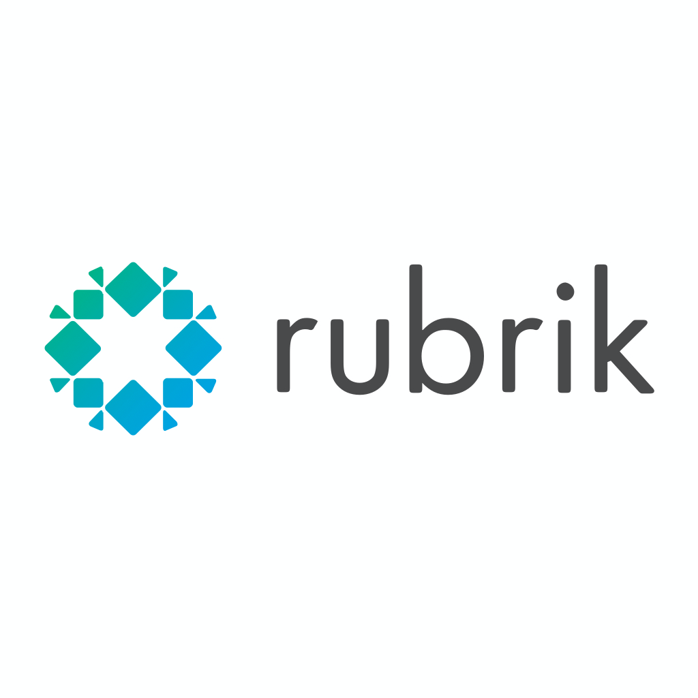

Personal Projects
Image Tag Gallery
Developed a full-stack image tagging application with
React.js
.
Utilized
AWS S3
for image storage and
Google Cloud Vision API
for tag generation.
Implemented backend creating
serverless architecture
for image compression and metadata generation.
Enhanced tag-based search functionality with a responsive frontend gallery interface.
Party Picassos
Led a team of four to develop an event exploration platform using
Express.js
and
MongoDB
.
Implemented user authentication and authorization using
JWT
.
Designed and developed a responsive UI with
React.js
.
Netflix Clone
Engineered a Netflix clone using
Tailwind CSS
and
Django
.
Achieved a 60% similarity in UI aesthetics compared to the original platform.
Implemented user authentication and profile management.
Vanilla JS Music Player
Developed a music player using
Vanilla JavaScript
,
HTML
, and
CSS
.
Implemented features for playing, pausing, and skipping tracks.
Created a responsive design for seamless use across devices.
Integrated dynamic loading of music and cover images from the 'music' folder.
Open Source Contributions

Rubrik
Collaborated in developing integration of
Rubrik Polaris
on
Cortex XSOAR
platform, enhancing security orchestration capabilities.
Designed and implemented a comprehensive playbook for anomaly analysis, improving threat detection and response times.
Utilized
Python
for backend integration and
YAML
for configuration files.
Implemented API calls to Rubrik Polaris for data retrieval and analysis within the XSOAR environment.
Flashpoint
Contributed to the development of the content pack for integrating
Flashpoint
threat intelligence into
Cortex XSOAR
.
Created playbooks to automate the process of determining risks and remediating compromised credentials.
Implemented
RESTful API
calls to Flashpoint's services for real-time threat data retrieval.
Developed custom scripts in
Python
to parse and analyze threat intelligence data within XSOAR.
GreyNoise
Developed integration to leverage
GreyNoise's
internet background noise data in
Cortex XSOAR
workflows.
Fixed critical bugs in previous versions, improving stability and performance of the integration.
Created detailed documentation and usage examples to facilitate adoption by security teams.
BitSight
Collaborated on the development of
BitSight
integration for security performance management within
Cortex XSOAR
.
Designed and implemented a playbook to efficiently determine IP reputation using BitSight's data.
Integrated
BitSight's API
to retrieve real-time security ratings and risk vectors.
Developed custom dashboards for visualizing security performance metrics within XSOAR.